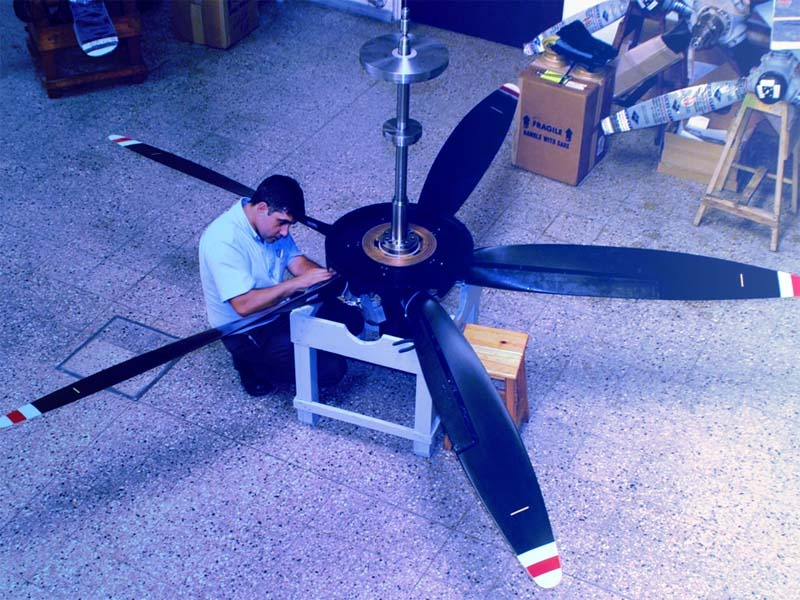
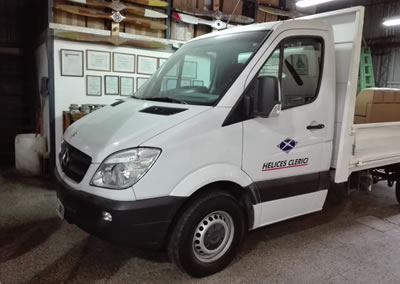

Hélices Clerici
FILOSOFÍA
Servicios
Servicios
- Cálculo, diseño, y fabricación de hélices de materiales compuestos, de paso fijo, y variable.
- Reparación, mantenimiento, y servicio de hélices de paso fijo y variable, para aviones.
- Venta de hélices nuevas y usadas overhauleadas.
- Venta de componentes de hélices:Palas, cubos, bulkheads, spinners, cilindros, pistones etc.
- Procesos de cadmio y deshidrogenado para materiales ferrosos.
- Procesos de anodizado, para aluminio.
- Ensayos No-Destructivos de materiales aeronáuticos, Partículas Magnéticas, Líquidos Penetrantes, Eddy Current, Ultrasonido, todos los procesos son realizados en nuestro laboratorio propio, con personal, de la casa formado en Inglaterra, y Estados Unidos.
- Balanceo estático: estamos equipados, con dos balanceadores de suspensión, Marvell uno para hélices con flange y el otro para hélices con eje pasante (cigüeñal estriado) Lo cuál hace muy preciso, nuestro balanceo. Balanceo dinámico: Disponemos de un equipo Chadwick para este tipo de balanceo.
- Reparación, venta y overhaul de Governor
En Hélices Clerici nuestro orgullo ha sido siempre nuestra capacidad de adaptación a los nuevos desafíos. Desde la década del cuarenta, cuando nos convertimos en el primer taller del país en construir hélices de madera, hasta el presente, en el que nuestra oferta incluye: Servicios para toda hélice de aviación general y transporte. Servicio de NDT para todo tipo de estructura aeronáutica. Hemos mantenido viva la política de capacitación e inversión como pilar de nuestro progreso, para estar siempre a la vanguardia en todos los rubros abarcados. Hoy en día nuestra oferta de servicios abarca desde una simple hélice de paso fijo de un entrenador hasta las más modernas hélices de material compuesto de grandes transportes turbohélices de hasta 5000SHP. Esta diversidad de oferta nos ha posicionado como la opción elegida por muchos operadores tanto civiles como militares de la región.
